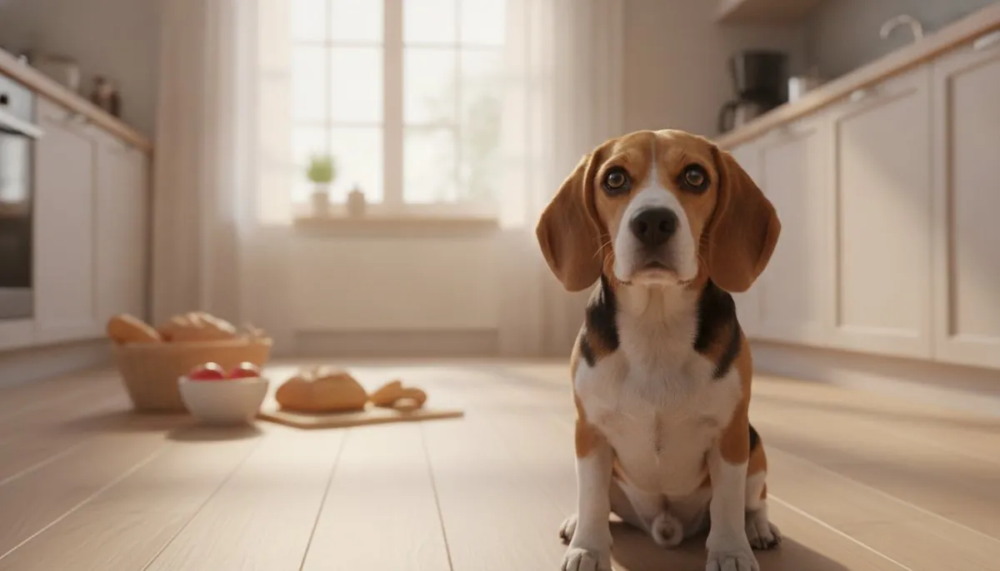

25 Human Foods Toxic to Dogs
Updated 23 September 2026 · Reviewed against ASPCA, Pet Poison Helpline & Merck Veterinary Manual guidance

Your kitchen is full of everyday foods that are perfectly fine for you and dangerous for your dog — and some do harm in surprisingly small amounts. Here are the 25 to keep well out of reach, how serious each one is, how fast it acts, the warning signs to watch, and exactly what to do if your dog gets into something.
Call your vet or a pet poison helpline right away: ASPCA Animal Poison Control 888-426-4435 or Pet Poison Helpline 855-764-7661 (both may charge a consultation fee). Have your dog's weight, what and how much was eaten, and the time ready. Don't induce vomiting unless a professional tells you to.
📄 Free printable PDF — toxic-foods wallet card
Why dogs are more at risk than we are
It isn't just that dogs are smaller. A few things stack the odds against them:
- They process some chemicals very slowly. Dogs take around 17 hours to clear half of the theobromine in chocolate — so repeated nibbles pile up instead of wearing off.
- They're built to scavenge. Dogs eat fast and eat everything: the wrapper, the whole bag of raisins, the moldy bread in the compost. The dose is rarely "one bite".
- Size changes the math. The same brownie that barely registers for a 90-lb Labrador can be a real emergency for a 10-lb Yorkie. That's why vets always ask your dog's weight first.
- Some breeds are extra sensitive. Akitas and Shiba Inus react more strongly to onion and garlic; Greyhounds and retrievers are more prone to the dangerous overheating caused by hops.
How fast does it act? The onset timeline
Some poisons show signs within minutes; others look fine for a day or more while damage builds quietly. No symptoms yet does not mean safe.
| Food | What it harms | Signs usually start |
|---|---|---|
| Xylitol | Blood sugar, liver | 10–60 minutes |
| Alcohol / raw dough | Brain, breathing, blood sugar | 30–60 minutes |
| Caffeine | Heart, nervous system | 30 minutes – 2 hours |
| Marijuana edibles | Nervous system | 30 minutes – 3 hours |
| Moldy food | Nervous system (tremors) | 30 minutes – a few hours |
| Chocolate | Heart, nervous system | 6–12 hours |
| Macadamia nuts | Muscles, nerves | Within 12 hours |
| Grapes & raisins | Kidneys | Vomiting in hours; kidney failure 1–3 days |
| Onion, garlic & family | Red blood cells | 1–5 days |
| Raw Pacific salmon | Whole body (infection) | 5–7 days (up to 33) |
The 25 most dangerous foods
The "call right now" group
1. Chocolate Severe
Theobromine and caffeine build to toxic levels because dogs clear them so slowly. Baking chocolate and cocoa powder are the worst, then dark, then milk chocolate. White chocolate is low in theobromine but still fatty and sugary.
Signs: vomiting, restlessness, heavy panting, racing heart, tremors, seizures.
Full guide → Chocolate calculator →2. Grapes & 3. Raisins Severe
Can cause sudden kidney failure, and the reaction is unpredictable — some dogs eat a handful with no issue, others get very sick from a few. Raisins, currants and sultanas are concentrated, so they're even riskier per bite. Watch trail mix, cereal, bagels and fruit cake.
Signs: vomiting, lethargy, belly pain, drinking more then urinating less or not at all.
Grapes → Raisins → Grape calculator →4. Xylitol Severe
This sugar-free sweetener is one of the fastest-acting poisons for dogs. Small amounts trigger a big insulin release and a blood-sugar crash; larger amounts can cause liver failure. It hides in gum, mints, some peanut butters, vitamins, toothpaste and baked goods, sometimes listed as "birch sugar".
Signs (10–60 min): vomiting, wobbliness, sudden weakness, collapse, seizures.
Full guide → Xylitol calculator →5. Coffee & caffeine Severe
Coffee, tea, soda, energy drinks and, above all, grounds, beans and caffeine pills over-stimulate the heart and nervous system. A lapped-up sip of latte is rarely the problem; a bag of beans is.
Signs: hyperactivity, panting, racing heart, tremors.
Full guide →6. Alcohol Severe
Toxic in any amount. It hides in unattended drinks, liquor chocolates, rum-soaked cakes and fermenting fruit, and it can drop a dog's blood sugar and body temperature dangerously.
Signs: wobbliness, vomiting, drowsiness, slowed breathing.
Full guide →7. Raw bread dough Severe
A double danger: it keeps rising in the warm stomach (painful bloat that can need surgery) and the fermenting yeast produces alcohol. Pizza dough on the counter to rise is a classic counter-surfing emergency.
Signs: swollen belly, unproductive retching, drooling, wobbliness.
Full guide →8. Moldy food & garbage Severe
Moldy bread, cheese, nuts and compost can carry tremor-causing mycotoxins. Dogs that raid the trash or compost bin can go from normal to shaking within a couple of hours.
Signs: vomiting, agitation, tremors, overheating, seizures.
Full guide →9. Hops Severe
A must-know for home brewers. Hops (fresh or spent) can trigger a runaway rise in body temperature. Greyhounds, Labradors and Golden Retrievers seem especially vulnerable.
Signs: heavy panting, very high temperature, racing heart, restlessness.
Full guide →10. Raw salmon & trout (Pacific Northwest) Severe
Raw or undercooked salmon, trout and related fish from the Pacific Northwest can carry a parasite that transmits "salmon poisoning disease" — fatal if untreated, but very treatable if caught. Mention any raw fish to your vet if your dog gets sick within a few weeks.
Signs (5–7 days): fever, vomiting, bloody diarrhea, refusing food, swollen lymph nodes.
Full guide → Cooked salmon (safe) →The onion family — slow, silent and cumulative
11. Onion Severe
Damages red blood cells and causes anemia in every form: raw, cooked, fried, dried or powdered. Toxic doses start at roughly 0.5% of body weight, so about one medium onion for a 50-lb dog, and small amounts eaten day after day add up.
Signs (often 1–5 days later): weakness, pale gums, fast breathing, reddish urine.
Full guide → Onion & garlic calculator →12. Garlic Severe
The same damage as onion, only more potent per gram. Garlic powder, garlic bread and garlic butter are the usual culprits. "Garlic for fleas" home remedies are not a safe idea.
Signs: as onion, delayed.
Full guide →13. Leek, 14. Chives & 15. Shallots / green onions High
All members of the allium family, with the same effect on red blood cells. Chives are among the most concentrated. They're easy to miss in soups, dips, stuffing and gravy.
Signs: as onion, delayed.
Leek → Chives → Shallot → Green onion →Serious — call your vet the same day
16. Macadamia nuts High
They cause a specific reaction in dogs that affects the muscles and nerves. It's rarely fatal, but it's frightening, and chocolate-covered macadamias double the risk.
Signs (within ~12 h): hind-leg weakness, tremors, fever, vomiting.
Full guide →17. Marijuana & edibles High
Dogs are more sensitive to THC than people, and edibles often add chocolate, xylitol or butter to the mix. Be honest with your vet: they only want to treat your dog safely.
Signs: wobbliness, dribbling urine, dilated pupils, jumpiness to sound or touch, a slow heart rate.
Full guide →18. Salt (in large amounts) High
A salty chip won't hurt, but a big load at once can cause sodium poisoning that affects the brain. Think homemade play dough and salt-dough ornaments, a bag of chips, rock salt, or a day of drinking seawater.
Signs: intense thirst, vomiting, wobbliness, tremors, seizures.
Full guide →19. Nutmeg High
Contains myristicin, which affects the nervous system in larger amounts. A trace in a baked treat is low-risk; eggnog, spiced drinks and a knocked-over jar are not.
Signs: disorientation, racing heart, high blood pressure, tremors.
Full guide →20. Star fruit High
Contains soluble oxalates that can drop calcium levels and injure the kidneys. The unripe fruit is the most dangerous.
Signs: drooling, vomiting, weakness, tremors, reduced urination.
Full guide →21. Cooked bones High
Not a poison but a real physical hazard. Cooked bones (especially poultry and rib bones) splinter and can cause choking, mouth injuries, blockages or a punctured gut.
Signs: gagging, drooling, retching, straining, bloody stool, distress.
Full guide →22. Fruit pits & stones High
Cherry, peach, plum and apricot pits, plus stems and leaves, contain cyanide-releasing compounds when chewed. The bigger everyday danger is a whole stone lodging in the gut. The flesh itself is fine in small, pitted pieces.
Signs: vomiting, loss of appetite, straining; bright-red gums or trouble breathing in rare cyanide cases.
23. Fatty scraps: bacon, ham, sausage, drippings High
A single rich, fatty meal can trigger pancreatitis, which is painful and sometimes needs a hospital stay. Miniature Schnauzers and overweight dogs are at extra risk. Many of these foods are salty and seasoned with onion too.
Signs (usually within 1–4 days): repeated vomiting, a hunched "praying" posture, belly pain, diarrhea.
Bacon → Ham → Sausage →24. Walnuts & pecans High
The nuts themselves are fatty and choking-sized, but the real worry is mold. Fallen or old walnuts and pecans often carry tremor-causing mycotoxins, and black walnut hulls from the yard are a known problem.
Signs: vomiting, tremors, seizures (if moldy); stomach upset or blockage (if not).
Walnuts → Pecans →25. Avocado Moderate
Avocado is often called "toxic" to dogs. That's mostly a myth: the persin in it is a serious problem for birds, rabbits and horses, but dogs handle it far better. The real risks for dogs are the pit (a perfect-size gut blocker) and the fat, especially guacamole, which usually contains onion and garlic too.
Signs: vomiting, diarrhea; straining or no appetite if a pit was swallowed.
Full guide →Where these foods hide: a hidden-ingredient checklist
Most poisonings aren't a dog eating a raw onion. They're a dog eating something that contains one. Check the label before sharing:
- Peanut butter and nut butters: a few brands use xylitol ("birch sugar"). Plain, unsweetened peanut butter is fine.
- Baby food, broth and stock: often seasoned with onion or garlic powder. Check before using it to tempt a sick dog.
- Trail mix and granola: the triple threat of raisins, macadamias and chocolate chips in one bag.
- Baked goods: raisins, chocolate, nutmeg, macadamias, xylitol, and sometimes rum.
- Gum, mints, cough drops, chewable vitamins and toothpaste: common xylitol sources. Handbags and backpacks on the floor are a top cause of poisoning.
- Pizza, garlic bread, pasta sauce, burgers and meatballs: onion and garlic, plus fat and salt.
- Coffee grounds and tea bags in the trash: concentrated caffeine that dogs love to dig out.
Beyond the kitchen: non-food dangers dogs eat too
Poison lines get just as many calls about things that aren't food at all. The most common:
Not sure about a pill? Our human medicine checker and plant checker give quick answers.
What to do if your dog ate something toxic: 6 steps
- Move your dog away and remove what's left. Keep the wrapper, package or a sample. The label tells the vet exactly what's in it.
- Work out the basics: what was eaten, roughly how much, when, and your dog's weight.
- Call your vet or a poison line now, even if your dog seems fine: ASPCA 888-426-4435 or Pet Poison Helpline 855-764-7661. Many poisons (grapes, onion, xylitol's liver effects) are silent at first.
- Don't make your dog vomit unless told to. Salt, oils or fingers down the throat can make things worse, and some substances do more damage coming back up. Hydrogen peroxide should only be used if a vet tells you to, at the dose they give.
- Follow the instructions and head in if asked. Treatment is fastest and cheapest early, often before any symptoms appear.
- Watch closely for the next 72 hours. Note vomiting, drinking, urination, energy and gum color, and call back if anything changes.
Our "my pet ate something" emergency tool walks you through this step by step.
What to give instead: safe swaps
Want to share something from the kitchen? These are good treats that vet sources endorse. Tap any to see the safe amount (treats should stay under about 10% of daily calories):
Want the full list? See our 25 safe fruits & veggies for dogs.
Frequently asked questions
How much chocolate is toxic to a dog?
It depends on the type and your dog's size. Mild signs can start around 20 mg of theobromine per kg of body weight, and heart and seizure risks rise sharply above 40–60 mg/kg. In practice, a small square of baking chocolate can be serious for a small dog, while a bite of milk chocolate usually isn't. Our chocolate calculator does the math for you.
My dog ate one grape — should I worry?
Call a poison line. Most dogs that eat one grape are fine, but there's no reliable safe number and kidney damage can be silent for a day or two. Your vet may recommend making your dog vomit early, which is simple and far cheaper than treating kidney failure.
Which of these acts the fastest?
Xylitol: signs can appear within 10–60 minutes. Treat any "sugar-free" product ingestion as an immediate emergency.
Which ones are dangerous even though my dog seems fine?
Grapes and raisins (kidney failure 1–3 days later), onion and garlic (anemia over several days), xylitol (liver damage can follow the sugar crash) and raw Pacific salmon (illness about a week later). "Fine right now" doesn't rule these out.
Is a little onion or garlic in food OK?
One lick of a sauce is very unlikely to cause harm in a medium or large dog, but the damage is cumulative. Regularly feeding table scraps seasoned with onion or garlic can cause anemia over time. Skip seasoned leftovers as a habit.
Is avocado really toxic to dogs?
Much less than its reputation suggests. The flesh isn't highly toxic to dogs; the pit (blockage) and the fat (pancreatitis) are the real issues. Guacamole is a no, because it usually contains onion and garlic.
Should I make my dog throw up?
Only if a vet or poison-control expert tells you to. Vomiting can be harmful after caustic products, sharp objects or if your dog is already drowsy, and home methods like salt are dangerous themselves.
Are pet poison hotlines free?
The ASPCA and Pet Poison Helpline usually charge a one-time consultation fee, which covers follow-up calls with your vet about that case. Your regular vet or an emergency clinic is always a good first call too.
What's the very first thing I should do?
Call your vet or a poison line (ASPCA 888-426-4435 / Pet Poison Helpline 855-764-7661) with the details, and don't induce vomiting unless they tell you to. Our emergency tool walks you through it.
Are these the same foods that are toxic to cats?
Mostly, but not exactly. Cats have extra risks like lilies and certain pain relievers, and they react differently to some foods. See foods cats should never eat.
Sources & method: compiled from the ASPCA Animal Poison Control Center's people-foods guidance (including its 2021 tartaric-acid findings on grapes), the Pet Poison Helpline, the Merck Veterinary Manual's entries on chocolate, xylitol, macadamia nut, Allium and mycotoxin toxicoses, and American Kennel Club guidance on human foods for dogs. Reviewed and expanded by the CanMyPet editorial team on 23 September 2026. See our sources & review method. This guide is for information only and is not veterinary advice. Your own vet knows your dog's weight, age and health history, and should have the final word in any suspected poisoning.